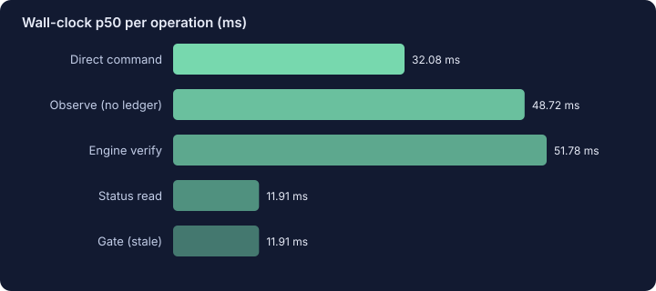
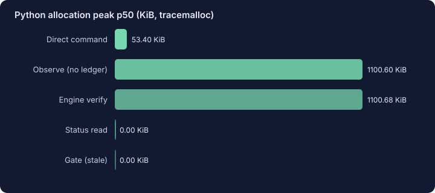
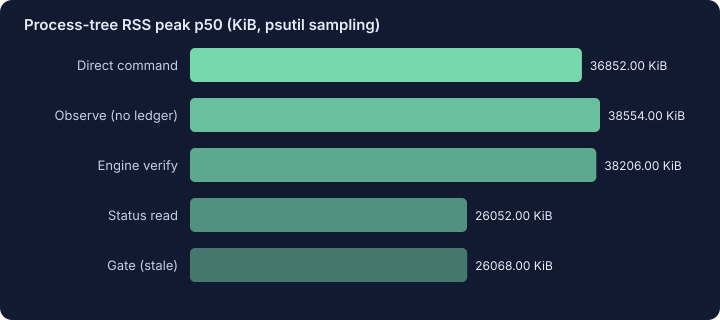

Revision-bound receipts
Not a command history. A PASS is invalidated by a change to any declared source, test, artifact or check definition.
Native Hermes plugin · local-first · deterministic
Completion Proof runs checks you configured, hashes the source, test and artifact scope you declared, and records PASS / FAIL / UNKNOWN receipts. Change a relevant file and the old PASS becomes STALE.
Quickstart Acceptance evidence
No network by default · no LLM in the check path · the model cannot pass a command or a working directory to a check.
A check is an argv vector, a timeout, and source/test/artifact globs in
config.yaml. It is operator configuration, not a model tool input.
The command runs with shell=False, a filtered environment, a bounded
timeout and a killed process group. The declared files are hashed before and after.
The receipt stores the command vector, exit code, timeout flag, duration, output hashes, every scoped file hash, and a scope summary. A PASS is only fresh while those hashes still match.
When a coding turn edited covered files without fresh evidence, the native
pre_verify hook asks once for verification. It is one-shot and bounded;
it does not lock every answer or overwrite the final response.
These charts are generated from the committed raw benchmark file by
scripts/render_site.py. They are deterministic-engine measurements,
not full Hermes agent runs. RSS is actual resident memory sampled from the process
tree; tracemalloc is a separate Python-allocation measure. No positive percentage is
hardcoded.



Demo: real CLI replay MP4 (labelled replay, not live). Raw data: raw.json · raw.csv · resource report. Environment, commit, command and caveats are in the raw JSON. RSS and parent/child CPU are actual local counters; the full-agent token cost is not measured and is not claimed to be zero.
# 1. Install the plugin directory (or extract the release archive) into
# $HERMES_HOME/plugins/completion-proof, then:
hermes plugins enable completion-proof
# 2. Generate a starter check to review in config.yaml
hermes completion-proof init
# 3. Run it and inspect the receipt
hermes completion-proof verify
hermes completion-proof status
# 4. After editing a covered file, the old PASS is STALE
hermes completion-proof status
The plugin tool is named proof_verify. Hermes may defer plugin tools;
then use tool_call or the CLI above. The slash command is
/proof verify.
Not a command history. A PASS is invalidated by a change to any declared source, test, artifact or check definition.
The model can select a configured check id; it cannot supply argv, cwd, env or globs. Shell execution is never enabled.
Timeout, missing artifact, path escape, changed-during-hash and no-receipt all surface as UNKNOWN. An old pass after an edit surfaces as STALE, never PASS.
SQLite under the profile's plugin-data directory. No telemetry, no network calls in the engine, no credential reads.
pre_verify fires only on coding turns that edited files, and the nudge is bounded. It is not a fail-closed lock on every answer.tool_call or use the CLI if proof_verify is not in the immediate tool list.Completion Proof transforme une exécution de contrôles configurés en reçus PASS/FAIL/UNKNOWN liés aux empreintes SHA-256 des fichiers réellement concernés. Toute modification pertinente rend l’ancien PASS STALE. Local, déterministe, sans réseau ni LLM dans le moteur de vérification.